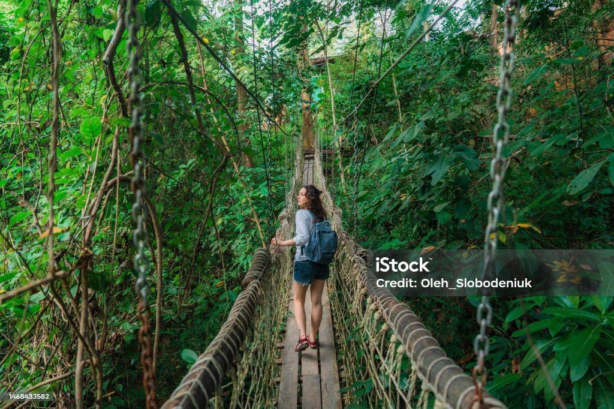
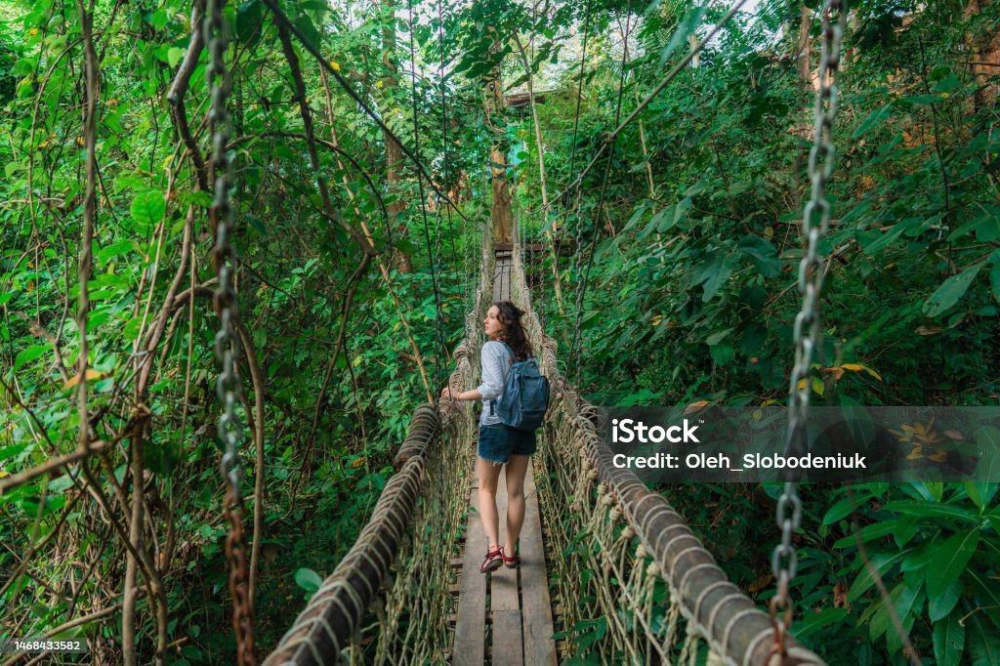
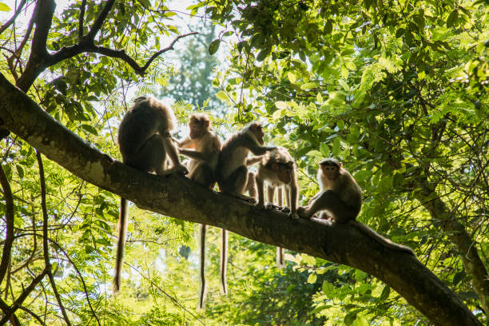
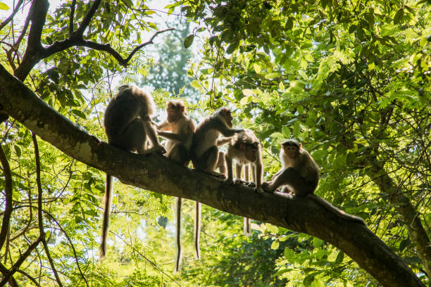
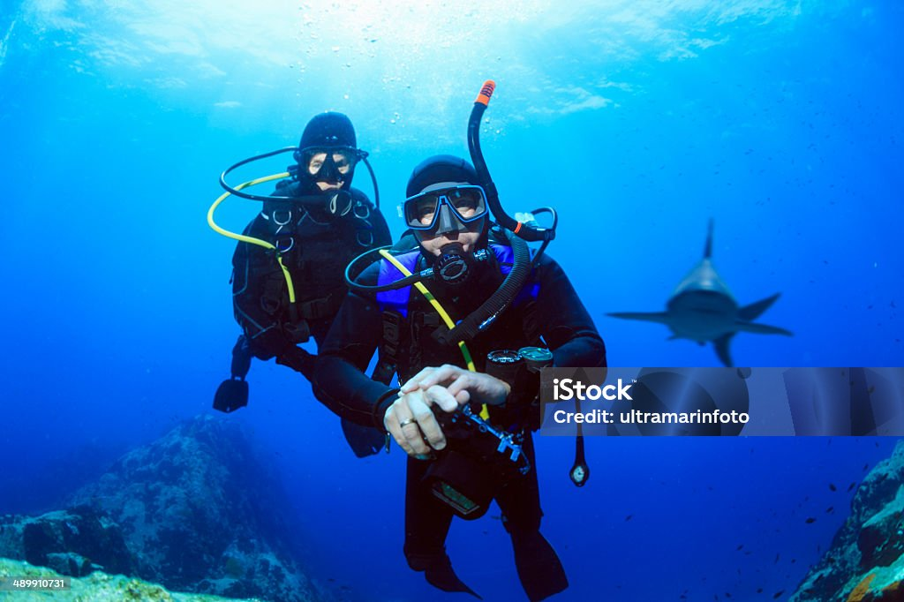
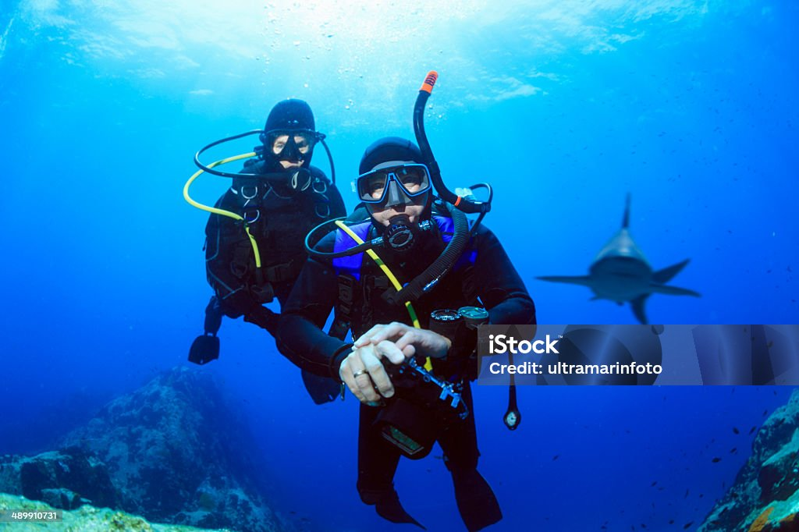

About

Welcome to the Tioman Island information webpage. Here you will find whats on offer on the Island and immurse yourself in an Island paradise. If you are looking at certain activities we have alot going on on Tioman. There is an abundence of accommodation, hiking, and ocean adventures. Get in touch with us for more detailed information.
Pulau Tioman is a duty-free island off Peninsular Malaysia's east coast, acclaimed as a geological wonder, ecological paradise and one of Southeast Asia's most beautiful travel destinations. Located 32 nautical miles off the mainland, but connected through Mersing (Johor) and Tanjung Gemuk (Pahang) via ferry, the island continues to enchant visitors with its warm beaches, lovely seas and lush greenery. Gazetted as a marine park, the immediate waters are abundant with coral reefs and marine life - ideal for scuba diving and snorkelling. Much of the island is covered by pristine rainforest, home to several endemic wildlife species and suitable for nature explorations. Finally, Tioman Island attracts youthful travellers from around the world - truly a melting pot of cultures to meet on vacation.
Tiomans Jungle

Tiomans Jungles offer a variety of diverse hikes and beautiful wildlife and scenery. Tioman has got over 300 different spiecies on the Island, taking a guided tour through the jungle you will become immursed in the noise and enviorment of the ancient forest. Not only are there day hikes but short walks available as well. If you like to spot wildlife then you will enjoy going off the beaten track to really experience what the Jungle has to offer. Troops of monkeys, large pythons and lizards bigger than dogs. Tioman has a wide variety of animals and a very large variety of insects, make sure you remeber your bug spray because you will definatly need it here!
There are plenty of guides on Tioman to help you spot the best wildlife. There are many lizards, snakes, insects and small animals on Tioman. Get in touch with us to help make it the best experience.
Tiomans Sealife
Tioman is a Marine Park so there is plenty to do here in the water.
There are a few different Scuba Diving Schools and Free Diving
Schools on the Island. There are quite a few different dive spots
around the island and some just a short boat ride away. There is
also areas dedicated to snorkelling and free diving. There is also
waves here good enough to surf, there are areas perfect for paddle
boarding as well. The sealife is abundent with sharks and large
fish, to turtles and octopus along with large amounts of tropical
fish and coral reefs.
There are over 15 different Scuba Diving Schools on the island so you
can choose the most suited for your needs. There are Free Diving
schools also that can take you through the basics like breath control.
We know the best places to go that cater to your needs, get in touch
to book your dream experience.

Scuba Dive
This area attracts many tourists, it is really quite special to dive this marine park.
Scuba Dive
This area attracts many tourists, it is really quite special to dive this marine park.
Snorkelling
There are some amazing areas to snorkell. Lots of boat trips as well to take you to more awesome reefs.

Free Dive
Some representative placeholder content for the third slide.
Tioman Accommodation

There are many hotels, hostels, beach huts and more on Tioman. This varies from luxury hotels to beach huts with a fan and a mattress. It depends what your looking for and what type of budget you have. One of these accommodation shown is Swiss Cottage a small hotel with beach chalets. Sometimes the waves come right up to your doorstep! So get in touch with us to make this experience amazing.
The History of Tioman
Once upon a time, a Chinese dragon princess was in love with a Singaporean prince. One day she decided to go to visit him. The powerful princess opened her large wings and started flying over the country, observing the people below her. After few hours she started passing above the sea but decided to continue even when she started to feel tired. Suddenly a storm started; exhausted she noticed a beautiful area in the crystal clear water of the South China Sea and decided it was time to rest. She gently lay down in the water, enjoying the freshness and the beauty of the sky, warming her body by the sun. She finally fell asleep, completely relaxed by the beautiful atmosphere. When she woke she noticed animals who took shelter on her flank. She noticed monkeys climbing on her body, colourful fish hiding among her legs and travellers relaxing on her belly. Charmed by this atmosphere she created, she suddenly realized she should not be enclosed within a palace, but could become a princess of the sea offering protection to everyone who needed it. Using her power, she dug her legs deep in the bottom of the ocean and they became rocks and corals. She deployed her wings around her and transformed them into a tree, covering her body with jungle. Finally, she gave a last look to the life growing around and on her, to the sea she loved so much and to the sky she would never cross again and transformed herself entirely into rocks. And Pulau Tioman was born, offering a warm shelter in the middle of the ocean. Today the twin peaks, the emblematic mount of the island, (which are usually surrounded by a small fog) are the last remnants of her horn. These remind us of the sacrifice she made and some say you can feel her soul still living here, protecting everything and everyone living and traveling on the island.
 

 

 
